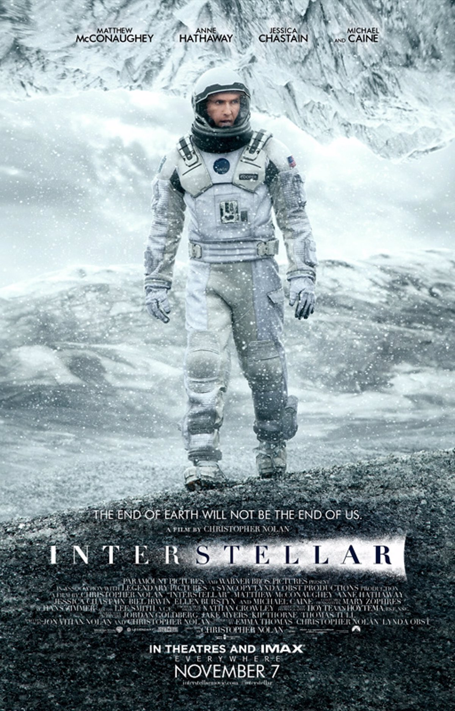

INTERESTELAR

Interstellar (conocida como Interestelar en Hispanoamérica) es una película de drama y ciencia ficción británico-estadounidense y canadiense de 2014, dirigida por Christopher Nolan y protagonizada por Matthew McConaughey, Anne Hathaway, Jessica Chastain, Michael Caine y Matt Damon. Ambientada en un futuro distópico donde la humanidad está luchando por sobrevivir, cuenta la historia de un grupo de astronautas que viajan a través de un agujero de gusano cerca de Saturno en busca de un nuevo hogar para la humanidad.
Los hermanos Christopher y Jonathan Nolan escribieron el guion, que tuvo su origen en un borrador que Jonathan desarrolló en 2007. Christopher Nolan produjo la película junto a su esposa Emma Thomas mediante su compañía productora Syncopy, y con Lynda Obst a través de Lynda Obst Productions. El físico teórico Kip Thorne, cuyo trabajo inspiró la película, fue productor ejecutivo y participó como consultor científico. Warner Bros., Paramount Pictures y Legendary Pictures cofinanciaron la película.[cita requerida
Interstellar se estrenó el 26 de octubre de 2014 en Los Ángeles. En América del Norte se lanzó en película fotográfica, expandiendo su disponibilidad a otros lugares usando proyectores digitales. En los Premios de la Academia de 2014, la película ganó el Óscar a los mejores efectos visuales, y fue nominada por mejor banda sonora, mejor sonido y mejor diseño de producción. Recibió también varios premios y nominaciones, en particular por sus efectos visuales, fotografía, banda sonora y la actuación de Mackenzie Foy.
En 2067, la destrucción de las cosechas en la Tierra ha hecho que la agricultura sea cada vez más difícil y se vea amenazada la supervivencia de la humanidad. Joseph Cooper, viudo, exingeniero y piloto de la NASA, dirige una granja con su suegro Donald, su hijo Tom y su hija Murph, quien cree que su habitación está embrujada por un poltergeist. Cuando aparecen inexplicablemente extraños patrones de polvo en el suelo de la habitación de Murph, Cooper se da cuenta de que la gravedad está detrás de su formación, no un "fantasma". Interpreta el patrón como un conjunto de coordenadas geográficas formadas en código binario. Cooper y Murph siguen las coordenadas a una instalación secreta de la NASA, donde se encuentran con el exprofesor de Cooper, el doctor Brand.